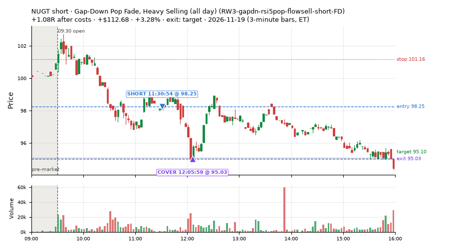
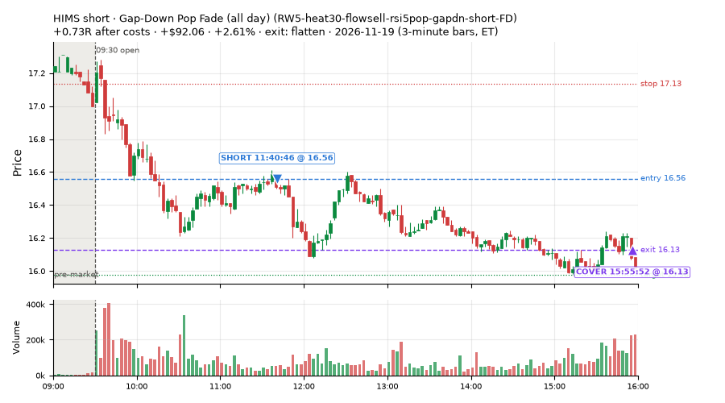
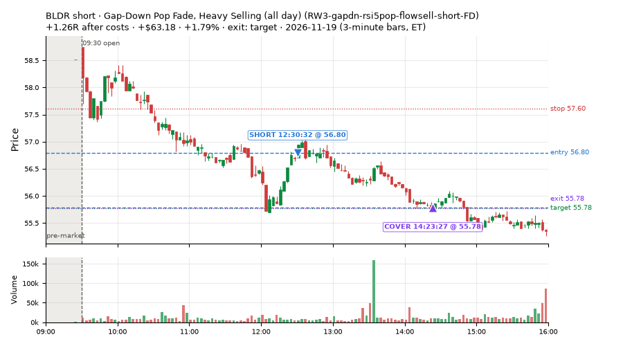
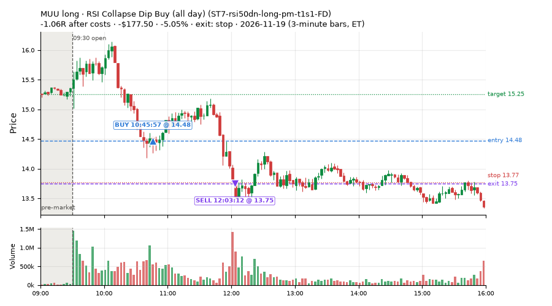
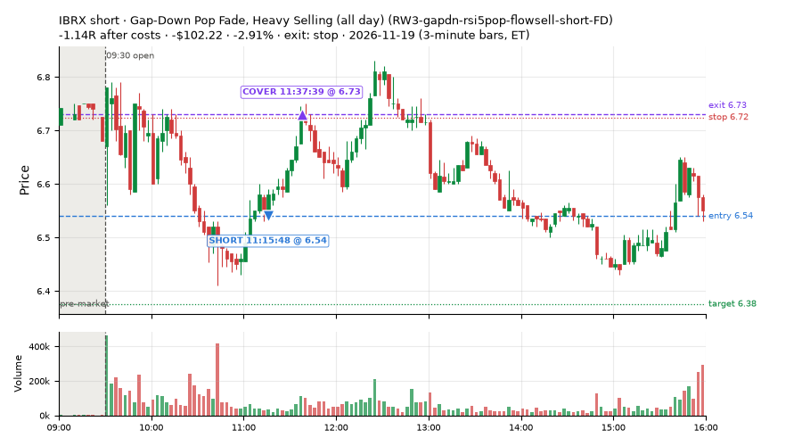
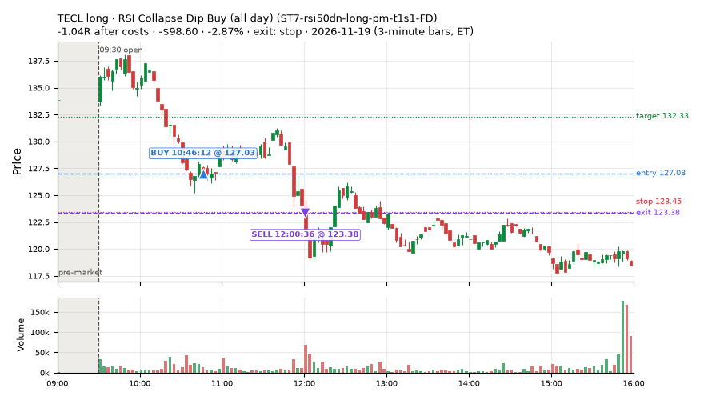
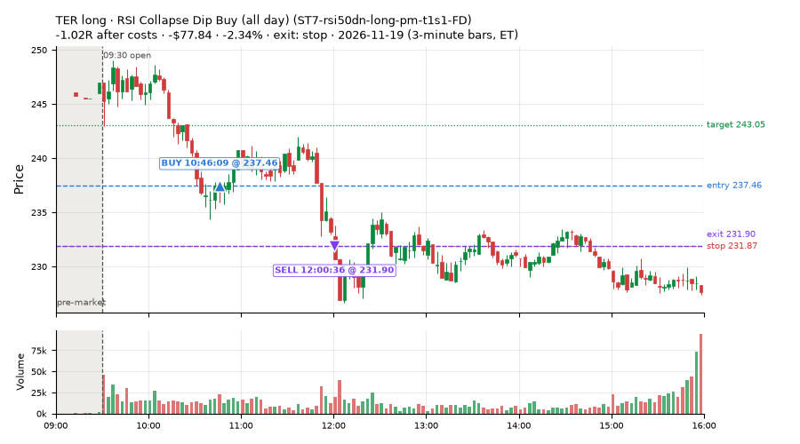
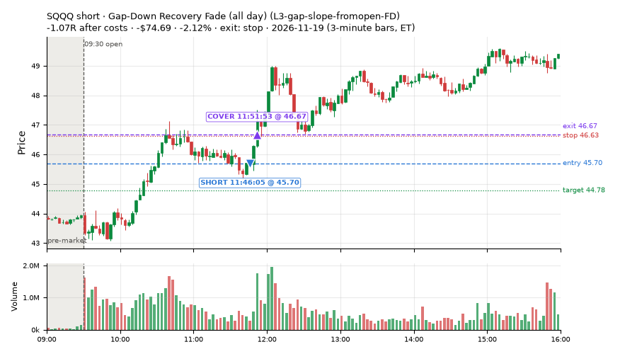

32 trades · win rate 25% · P/L $-760.48
PROBATION: no live setup has passed both locked test periods. 10 owner-directed setups added 2026-10-08 (MarcoFlow top 5 + 5 new), untested live. RW6G1 (RW6 + VWAP band guard) added 2026-10-09, probation.

| Symbol | Setup | Side | In | Out | Entry | Exit | Exit reason | % gained | P/L |
|---|---|---|---|---|---|---|---|---|---|
| NUGT | Gap-Down Pop Fade, Heavy Selling (all day) (RW3-gapdn-rsi5pop-flowsell-short-FD) | short | 11:30 | 12:05 | 98.25 | 95.03 | target | +3.28% | $112.68 |
| HIMS | Gap-Down Pop Fade (all day) (RW5-heat30-flowsell-rsi5pop-gapdn-short-FD) | short | 11:40 | 15:55 | 16.56 | 16.13 | flatten | +2.61% | $92.06 |
| BLDR | Gap-Down Pop Fade, Heavy Selling (all day) (RW3-gapdn-rsi5pop-flowsell-short-FD) | short | 12:30 | 14:23 | 56.80 | 55.78 | target | +1.79% | $63.18 |
| Symbol | Setup | Side | In | Out | Entry | Exit | Exit reason | % lost | P/L |
|---|---|---|---|---|---|---|---|---|---|
| MUU | ST7-rsi50dn-long-pm-t1s1-FD | long | 10:45 | 12:03 | 14.48 | 13.75 | stop | -5.05% | $-177.50 |
| IBRX | RW3-gapdn-rsi5pop-flowsell-short-FD | short | 11:15 | 11:37 | 6.54 | 6.73 | stop | -2.91% | $-102.22 |
| TECL | ST7-rsi50dn-long-pm-t1s1-FD | long | 10:46 | 12:00 | 127.03 | 123.38 | stop | -2.87% | $-98.60 |
| TER | ST7-rsi50dn-long-pm-t1s1-FD | long | 10:46 | 12:00 | 237.46 | 231.90 | stop | -2.34% | $-77.84 |
| SQQQ | L3-gap-slope-fromopen-FD | short | 11:46 | 11:51 | 45.70 | 46.67 | stop | -2.12% | $-74.69 |








Signal to fill: median 2s, 90th percentile 4s (32 trades). Bars close each minute; the order follows the bar close.
Best excursion (MFE): median 0.76R; worst (MAE) median 1.00R. 31% of trades never got +0.25R in our favour; 6 reached +1R and still closed at or below 0.
| Symbol | Setup | Best R | Worst R | Closed R |
|---|---|---|---|---|
| SMH | ST7-rsi50dn-long-pm-t1s1-FD | +1.32 | -1.10 | -1.14 |
| SPXS | L3-gap-slope-fromopen-FD | +1.34 | -1.60 | -1.03 |
| SPXS | L3-gap-slope-fromopen-FD | +1.11 | -1.46 | -1.22 |
| FTEC | ST7-rsi50dn-long-pm-t1s1-FD | +1.07 | -1.08 | -1.16 |
| TECL | ST7-rsi50dn-long-pm-t1s1-FD | +1.19 | -1.06 | -1.04 |
| Entry time | Trades | Win | Avg R | P/L |
|---|---|---|---|---|
| 10:30-11:30 | 12 | 8% | -0.92 | $-723.75 |
| 11:30-13:00 | 13 | 46% | -0.28 | $45.98 |
| 13:00-14:00 | 4 | 25% | -0.15 | $22.07 |
| 14:00-16:00 | 3 | 0% | -0.30 | $-104.78 |
| Setup | Trades | Win | Avg R after costs | Adj R (net of SPY) | Avg R ex-market (all sessions) | P/L |
|---|---|---|---|---|---|---|
| Gap-Down Recovery Fade (all day) (L3-gap-slope-fromopen-FD) | 6.0 | 0% | -1.08 | -1.47 | +0.00 (beta -0.62, n 181) | $-336.16 |
| Late-Day ETF Dip Buy (near-miss) (NM-ETF-late-dip-di-long) | 3.0 | 0% | -0.30 | -0.23 | +0.11 (beta +0.38, n 15) | $-104.78 |
| Gap-Down Pop Fade, Heavy Selling (all day) (RW3-gapdn-rsi5pop-flowsell-short-FD) | 8.0 | 62% | +0.25 | -0.33 | -0.05 (beta -1.01, n 169) | $170.28 |
| Gap-Down Pop Fade (all day) (RW5-heat30-flowsell-rsi5pop-gapdn-short-FD) | 7.0 | 43% | -0.32 | -1.39 | -0.03 (beta -0.68, n 180) | $53.20 |
| RSI Collapse Dip Buy (all day) (ST7-rsi50dn-long-pm-t1s1-FD) | 8.0 | 0% | -1.08 | -0.55 | -0.03 (beta +0.53, n 42) | $-543.02 |
Market direction (SPY, beta 1) accounted for $296.84 of today's $-760.48; the rest ($-1,057.32) came from the setups themselves. Avg R net of SPY: -0.82 (incl. a hedge leg's cost; report only).
5 setups live today. Today: 140 signals, 32 taken, 0 lost because another setup held the symbol (0%). Since 2026-10-06 (33 sessions): 5793 signals, 1395 taken, 204 lost to other setups (4%). Peak open positions today 17 of 77 slots. Earnings blackout removed 209 symbols before scanning.
Simulated playing time (not live): 4372 what-if trades of signals not taken, avg +0.10R, 62% winners; of them 204 lost to another setup (avg -0.11R).
Silent: intraday_momentum · Crowded out: MF4-h40-open-flowsell, MF3-open-flowsell-rsi5hi, MF5-flowsell-vwapup-rsi5hi · Starved: MF2-open-rsimidhi-flowsell
| Prio | Setup | Today sig / taken | Sessions | Signals / taken / trades | Taken/day | Expected/day | Lost to other setups | Lost to (setup n) | Top skip reasons | SIMULATED: not-taken n / avg R / win | Verdict |
|---|---|---|---|---|---|---|---|---|---|---|---|
| 1 | Late-Day ETF Dip Buy (near-miss) NM-ETF-late-dip-di-long | 3 / 3 | 7 | 15 / 15 / 15 | 2.14 | – | 0 | – | – | 0 / – | slow 10.7 entries/week; ~6 weeks to 60 trades |
| 2 | Gap-Down Pop Fade (all day) RW5-heat30-flowsell-rsi5pop-gapdn-short-FD | 10 / 7 | 25 | 261 / 180 / 180 | 7.20 | 12.79 | 0 | – | spread / quote / size 33, daily loss cap 26, not shortable / shorts off 21 | 81 / -0.03R / 48% | ok 36.0 entries/week |
| 3 | Gap-Down Pop Fade, Heavy Selling (all day) RW3-gapdn-rsi5pop-flowsell-short-FD | 11 / 8 | 25 | 292 / 169 / 169 | 6.76 | 13.59 | 1 | CWT14-failbrk-pdl-p10-lowvol-long 1 | daily loss cap 42, spread / quote / size 41, not shortable / shorts off 39 | 123 / +0.18R / 61% | ok 33.8 entries/week |
| 4 | RSI Collapse Dip Buy (all day) ST7-rsi50dn-long-pm-t1s1-FD | 8 / 8 | 19 | 70 / 42 / 42 | 2.21 | 2.17 | 0 | – | spread / quote / size 26, daily loss cap 2 | 28 / +0.21R / 61% | slow 11.1 entries/week; ~5 weeks to 60 trades |
| 5 | Gap-Down Recovery Fade (all day) L3-gap-slope-fromopen-FD | 108 / 6 | 17 | 3246 / 181 / 181 | 10.65 | – | 65 | L3-gap-slope-fromopen-FD 65, L3-gap-slope-rsi5hi-FD 14 | not shortable / shorts off 2065, per-setup cap 648, daily loss cap 149 | 3059 / +0.17R / 64% | ok 53.2 entries/week |
Every trade is attached as a CSV you can open and edit in Excel or Google Sheets. Live page: https://misiti15.github.io/MCF/live/